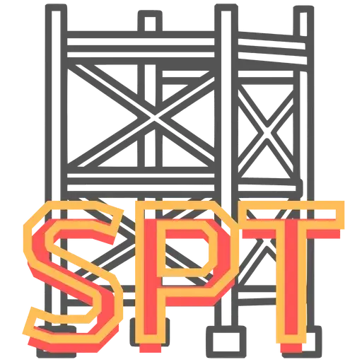
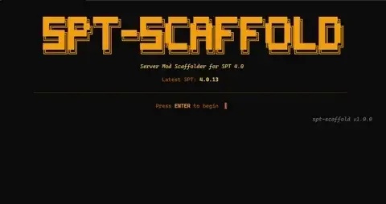

SPT Scaffold
- Downloads
- 371
- Favourites
- 3
Mods on Hiatus / Support Paused
- Status: No updates planned due to focus on other projects.
- Open Invitation: The community has full permission to update, modify, and redistribute these mods. Feel free to fork the repository and build your own version.

A terminal wizard (TUI) that scaffolds a ready-to-build SPT 4.x mod project in seconds — no manual setup required.
Supports both server mods (C# / .NET 9 / NuGet) and client mods (BepInEx / netstandard2.1).
Just run the binary, answer a few prompts, and get a fully configured project with correct namespaces, references, packaging target, and README.
- Interactive step-by-step TUI — no flags, no config files to edit
- Live SPT version picker — fetches available versions from NuGet so you always pin the right one
- Server mod — generates a
.csprojpre-wired withSPTarkov.Common,SPTarkov.DI, andSPTarkov.Server.Core - Client mod — generates a
.csprojtargetingnetstandard2.1with local DLL references auto-resolved from your SPT install path - Correct C# namespace and metadata filled with your name, version, and GUID
- Build + packaging target baked into
.csproj—dotnet buildproduces a ready-to-distribute.zip - Multiple starter templates per mod type
- License picker with 17 SPDX options
- Also generates a
.sln,README.md, and.gitignore - Input validation on every field (mod name, semver, URL, SPT install path, etc.)
Server mod templates:
Empty— minimalModMetadata+IOnLoadentry pointEdit Database—DatabaseServiceinjection exampleRead JSON Config— reads a customconfig.jsonviaModHelper
Client mod templates:
Empty— minimalBaseUnityPluginwithAwake()BepInEx Config— comprehensiveConfig.Bindexamples (bool, int/float sliders, string, enum, keybinds, color picker)Harmony Patch—ModulePatchwithPrefix/Postfixin aPatches/subfolder
Server mod:
MyMod/
├── MyMod.sln
├── MyMod.csproj ← NuGet refs + auto-zip packaging target
├── Mod.cs ← ModMetadata + IOnLoad entry point
├── README.md
└── .gitignore
Client mod:
MyMod/
├── MyMod.sln
├── MyMod.csproj ← Local DLL refs + auto-zip + PostBuild copy to BepInEx/plugins/
├── Plugin.cs ← BaseUnityPlugin + [BepInPlugin]
├── README.md
└── .gitignore
- Download the latest binary from the Files tab
- Place
spt-scaffold.exeinside the folder where you want your mod created - Run it — the wizard will ask for:
- Mod Type —
serverorclient - Template — starter template for your mod type
- SPT Install Path (client mods only) — used to resolve local DLL references
- Mod Name (used as C# namespace and GUID)
- Author
- Version (semver, defaults to
1.0.0) - SPT Compatibility (pick from live NuGet versions)
- Description (optional)
- Repository URL (optional)
- License
- Mod Type —
- Done — open the generated folder in your IDE and start coding
Want a template added to the wizard? Open a Pull Request on GitHub.
A template is just a folder with two things:
1. template.json — displayed in the picker UI:
{
"Label": "My Template",
"Desc": "Short description shown in the wizard"
}
2. One or more .tmpl files — the filename (minus .tmpl) becomes the generated file.
Templates use Go’s text/template syntax. Available fields:
| Field | Description |
|---|---|
{{.ModName}} |
Mod name (also used as namespace) |
{{.Author}} |
Author name |
{{.Version}} |
Mod version (semver) |
{{.SptVersion}} |
Pinned SPT version (e.g. 4.0.13) |
{{.SptVersionRange}} |
Version range (e.g. ~4.0.0) |
{{.Desc}} |
Mod description |
{{.RepoURL}} |
Repository URL |
{{.License}} |
SPDX license identifier |
{{.ProjectGuid}} |
Auto-generated UUID for .sln |
{{.SptInstallPath}} |
SPT install path (client mods only) |
Folder location:
- Server template →
internal/templates/server/myTemplateName/ - Client template →
internal/templates/client/myTemplateName/
Look at the existing templates in those folders as a reference before writing your own.
- Windows x64
- .NET 9 SDK — to build generated server mods
- An existing SPT installation — required for client mods (DLL references are resolved from it)
Issues? Open one HERE

Version
0.2.0
Features & Improvements
- Client Mods Support: Complete scaffolding for BepInEx client plugins targeting
netstandard2.1with automaticPostBuildevents to sync the output DLL directly into your SPTBepInEx/pluginsfolder. - New Client Templates:
empty: Minimal BepInEx plugin with Awake() entry point.harmonyPatch: Generates a structuredModulePatchexample ready for Prefix/Postfix patching.bepinexConfig: Generates comprehensive examples forConfig.Bind(sliders, keybinds, strings, toggles).
- New Server Templates:
empty: Minimal server mod with just a logging example.editDatabase: Example showing how to edit SPT database values.readJsonConfig: Allows loading a customconfig.jsonstraight from the server mod structure.
- Dynamic Template Engine: Refactored the core scaffolding to use external
.tmplfiles bundled viago:embed. Template selection screens now dynamically load entries fromtemplate.jsonmetadata files. - Community Templates Support: Because of the new dynamic engine, users can now easily contribute their own scaffold templates! Just create a new folder with
.tmplfiles and atemplate.jsonininternal/templates/and submit a Pull Request. - TUI Enhancements:
- Dynamic step navigation (skips SPT path for server mods).
- Character counter for descriptions.
- Graceful active item bounds-checking on lists.
Version
0.1.0
v0.1.0 — Initial Release
First public release of spt-scaffold — a terminal wizard that generates a ready-to-build SPT 4.x C# server mod project in seconds.
What’s included
- Interactive step-by-step TUI — no flags, no config files
- Live SPT version picker fetched from NuGet
- Generates
.csprojpre-wired withSPTarkov.Common,SPTarkov.DI, andSPTarkov.Server.Core - Auto-filled
ModMetadatawith your name, version, and GUID dotnet buildproduces a ready-to-distribute.zip- 17 SPDX license options
- Also generates
README.mdand.gitignore - Input validation on every field
Download
Grab spt-scaffold.exe, place it in your target folder, and run it.
Requires: Windows x64 · .NET 9 SDK (to build the generated project)
Windows SmartScreen warning? This is expected for unsigned binaries. You can safely click More info → Run anyway, or build from source if you prefer.